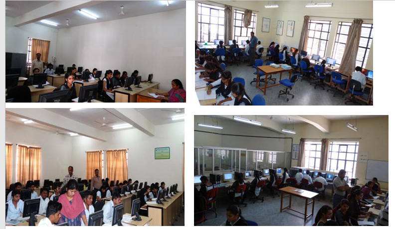
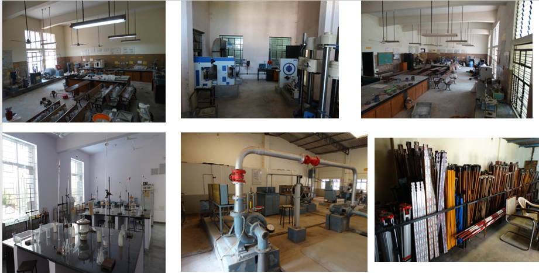
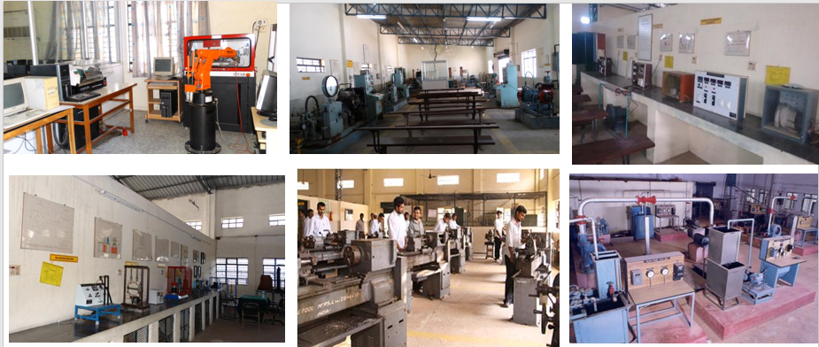
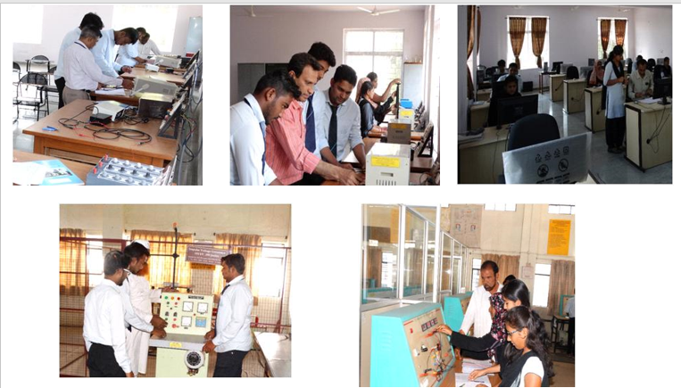
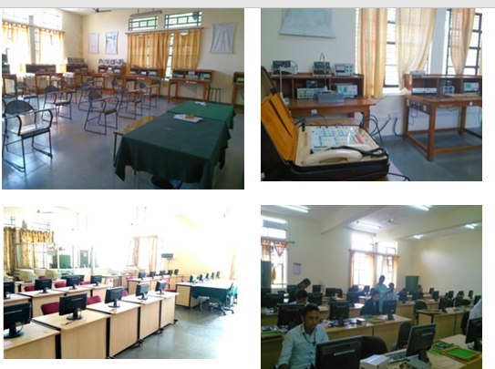

ComputerScience Engineering, civil Engineering, Mechanical Engineering
The present students’ strength is about 283. The department has been accredited twice by National Board of Accreditation (NBA), New Delhi. The department has eight separate computer laboratories, well equipped with modern computers, printers, scanners and UPS. The department library has good collection of prescribed books. Vision To be one of the best Computer Science & Engineering Departments in the entire nation producing world class engineers possessing excellent knowledge, skills, character and other attributes.
The department has Research Centre since 2010, where 14 candidates are pursuing Ph.D., It also has M.E degree course in Structural Engineering since 2011·The department has teaching staff members comprising of 04 doctorates, and rest post graduates. 07 of the staff members are working in this institution from the past over 25 years. There are 07 supporting staff members. The present students’ strength is 462 including about 103 girls. Vision To Transform the Department into a Centre of Excellence producing Quality Civil Engineers equipped with knowledge, skill, character and capability to compete nationally and globally.
The Mechanical Engineering Department was one of the First Departments to be started in this Institution in 1980. The Department offers UG, PG, MSc Engineering (By Research) and Ph.D. programmes. The Department was Accredited for 03 years by National Board of Accreditation (NBA) in the year 2004 and for 05 years in the year 2007. The department has bagged 01 UG university rank and 10 PG ranks. Vision To be globally recognized as the department providing outstanding Technical Education in the field of Mechanical Engineering to learners with scope for excellence in research and quality assured graduates possessing leadership skills
The department has well qualified; passionate and dedicated staff, most of who are engaged in path breaking research and development. With a current annual intake of 60 students from all parts of India Vision To be Recognized as Center of Excellence in Electrical and Electronics Engineering Education, Research and the Application of Knowledge to Benefit Society Globally.
The main aim of the department is to provide the quality education in the field of Electronics and Communication Engineering, as the global scene is exposed to new & Recent emerging technologies especially in Communication, VLSI subsystems and embedded technologies. Vision To be recognized as the best Electronics and Communication Engineering Department in our country by imparting good quality Education and moulding the students to become good citizens.
